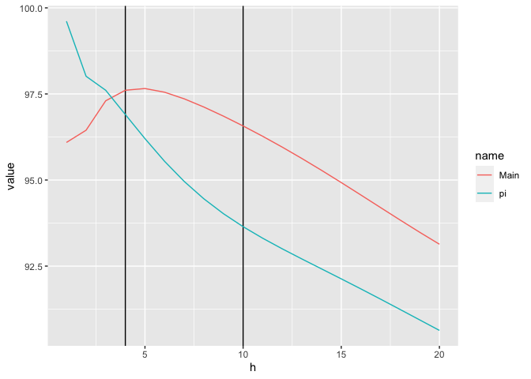
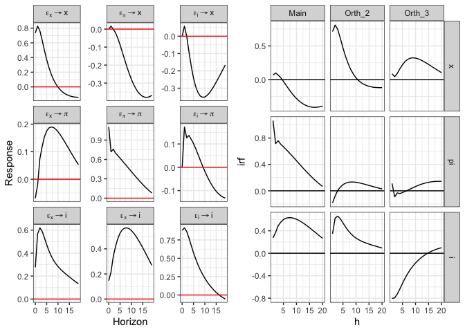
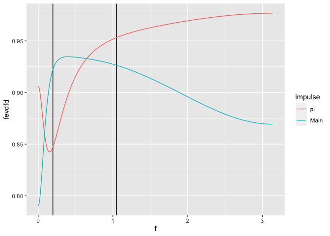

R package to identify structural VAR shocks using maximization of explained forecast error variances. Implemented to target either the time domain or frequency domain.
Installation
You can install the development version of fevdid from GitHub with:
# install.packages("devtools")
devtools::install_github("VFCI/fevdid")Usage
Main Shock in the Time Domain
Example of identifying the main shock along the time domain. Here the target variable is inflation over four to ten quarters out. The figure compares the identified main shock to the Choleskey shock for inflation, which already explains most of the variation in this simple 3-variable VAR. Clearly, however, the contribution from the Main shock is higher over the targeted time period.
library(fevdid)
## US data on inflation (pi), output (x), and federal funds rate (i)
x <- svars::USA
v <- vars::VAR(x, p = 2)
sv <- svars::id.chol(v, order_k = c("x", "pi", "i"))
## Find shock that maximizes forecast error variance for inflation (pi)
## from 4 to 10 quarters out
mv <- id_fevdtd(v, target = "pi", horizon = 4:10)
## Comparing fevds
fevdsv <- vars::fevd(sv, n.ahead = 20)$pi
fevdmv <- vars::fevd(mv, n.ahead = 20)$pi
## Plotting
require(ggplot2)
cbind(h = 1:20, fevdsv, fevdmv) |>
tidyr::pivot_longer(cols = !h) |>
dplyr::filter(name %in% c("Main", "pi")) |>
ggplot(aes(x = h, y = value, color = name)) +
geom_vline(xintercept = c(4, 10)) +
geom_line()
Getting impulse responses from the identified main shock VARs is handled by the usual irf function.
irfsv <- vars::irf(sv)
irfmv <- vars::irf(mv)
cowplot::plot_grid(plot(irfsv), plot(irfmv), nrow = 1)
Main Shock in the Frequency Domain
Example of identifying the main shock along the frequency domain. Here the target variable is inflation between $\frac{2\pi}{32}$ and $\frac{2\pi}{6}$, the “business cycle” frequencies. The figure compares the identified main shock to the Choleskey shock for inflation, which already explains most of the variation in this simple 3-variable VAR. The contribution from the Main shock is higher over the targeted frequency period.
library(fevdid)
## US data on inflation (pi), output (x), and federal funds rate (i)
x <- svars::USA
v <- vars::VAR(x, p = 2)
sv <- svars::id.chol(v, order_k = c("x", "pi", "i"))
## Find shock that maximizes forecast error variance for inflation (pi)
## in the "business cycle" frequencies
bc_freqs <- c(2 * pi / 32, 2 * pi / 6)
mfv <- id_fevdfd(v, target = "pi", freqs = bc_freqs)
## Comparing fevds
fevdsv <- fevdfd(sv)[, 2, 2]
fevdmv <- fevdfd(mfv)[, 2, 1]
## Plotting
require(ggplot2)
cbind(f = seq(0, 2 * pi, length.out = 1000), pi = fevdsv, Main = fevdmv) |>
dplyr::as_tibble() |>
tidyr::pivot_longer(cols = !f) |>
dplyr::filter(name %in% c("Main", "pi")) |>
ggplot(aes(x = f, y = value, color = name)) +
geom_vline(xintercept = bc_freqs) +
geom_line()
References
Chapter 6: “Forecast error variance maximization” of the book The Identification of Dynamic Stuctural Shocks, by Jean-Paul Renne and Kenza Benhima.
Explains and codes up an example of identifying a shock that maximizes forecast error variance contribution.
“What moves real GNP?”. Harlad Uhlig. (2003).